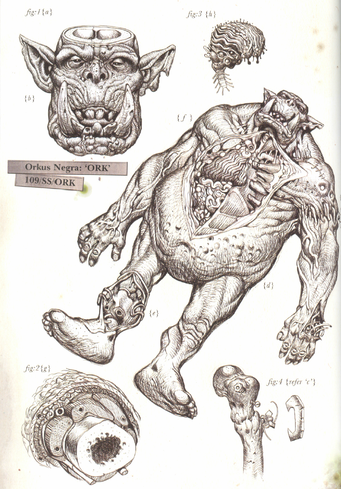
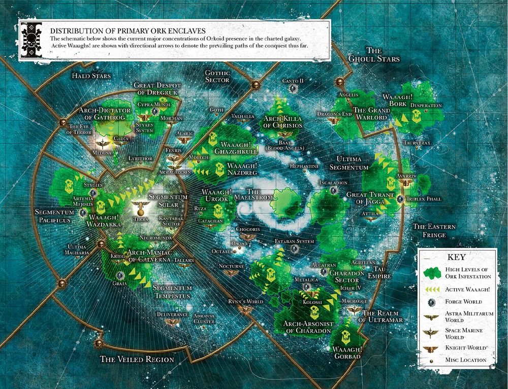

<<<<<ORKS>>>>>
The green-skinned menace - given your work on Armaggedon - is one you are well acquitainted with. The origins of this species are unknown. The orks infect a planet through sporulation. Once these seeds are sown, it is nigh impossible to rid the planet completely of these creatures. Their baseline intelligence is neglible, offset by their strength and survivablity, which Magos Tawnfry has documented as well above baseline human. All of the orks present in a system are rapidly increased in size and strength as more of their number congregate in a given area. Hence, Militarum guidelines dictate that any green skin presence be kept to an absolute minimum at all times
